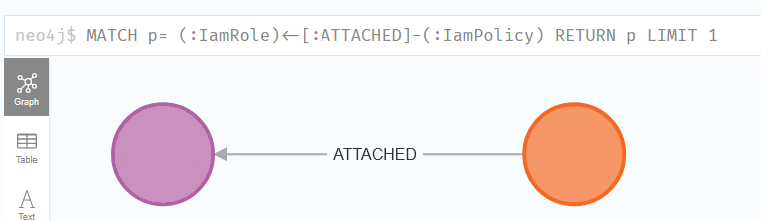
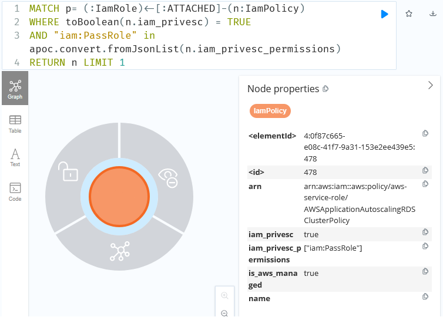
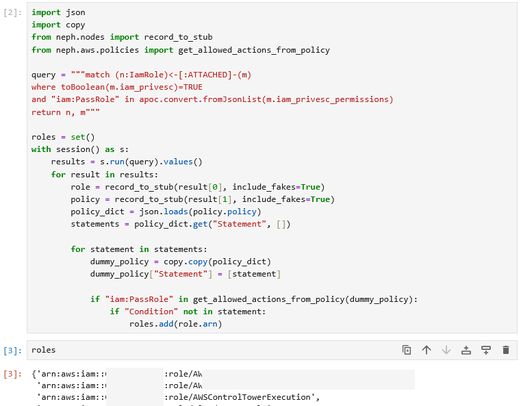
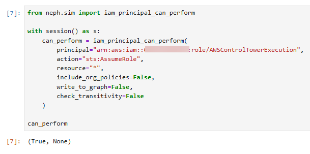
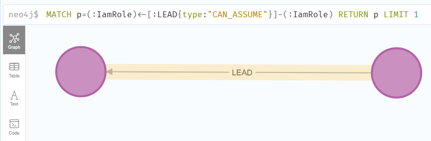
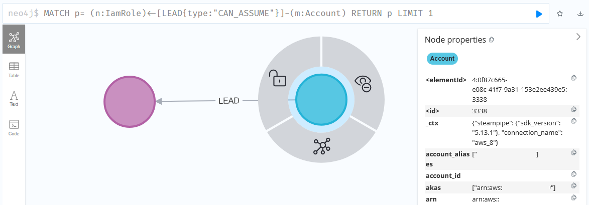
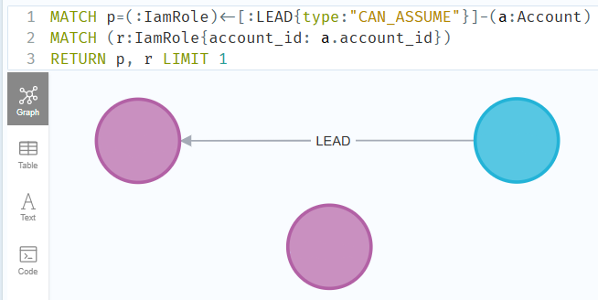
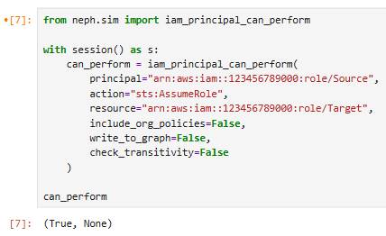
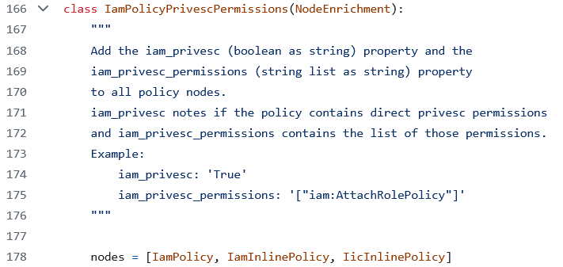
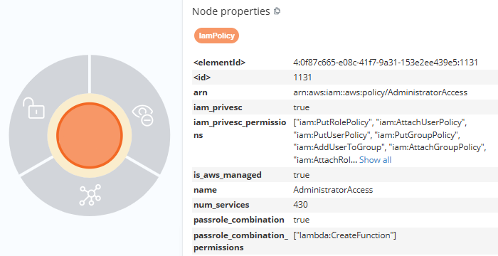

Analyzing Risk for IAM PassRole
The AWS iam:PassRole permission is one of the most foundational permissions in all IAM. It grants a principal the ability to assign roles to services. Unlike other privileged IAM permissions, which tend to allow for direct escalation paths, PassRole abuse is more nuanced and therefore it’s harder to assess the impact of PassRole assignments for principals. In this post, we will explore different methods of assessing risks associated with PassRole.
Overview⌗
PassRole is an IAM permission only, not an action. You can assign it to a principal, but there is no corresponding API call. Instead, each service implements an action that in some way passes a role to the service/resource. For example, if you create a new Lambda Function, you are required to set an execution role. The CreateFunction call will check that the calling principal has the PassRole permission (also applies to similar actions like UpdateFunctionConfiguration).
Abuse⌗
The risk of PassRole is hard to evaluate due to the complexity of an attack. The requirements for abuse are:
-
The compromised principal must have both the
PassRolepermission and the service-specific permission (ex:CreateFunctionfor Lambda). -
The attacker must be able to influence the service/resource that receives the role. This is the biggest difference as compared to direct privilege escalation permissions and is highly service specific.
As an example, we will use Lambda Function creation. The attacker will be operating from Role A, which has PassRole and CreateFunction permissions. The role they intend to pass is Role B and has administrator permissions (unconditional * on *). The attack steps are:
- Attacker prepares the Lambda Function code in a way that allows them to achieve their desired goal. For example, by having the code assign them an administrator policy or by creating a new administrator role they can assume.
- Attacker calls
CreateFunctionfrom Role A and specifies Role B as the new Function’s execution role - Attacker invokes the newly created Function
- Lambda invokes the Attacker’s code and performs AWS actions using Role B, the administrator role
Defense⌗
There are two primary ways to restrict PassRole in an IAM policy. The first is by using a Resource key to restrict the roles that can be passed.
{
"Version": "2012-10-17",
"Statement": [
{
"Sid": "1",
"Effect": "Allow",
"Action": "iam:PassRole",
"Resource": "arn:aws:iam::123456789000:role/RoleA"
}
]
}
The second is by using one or more PassRole-specific IAM conditions, namely iam:PassedToService and iam:AssociatedResourceARN.
{
"Version": "2012-10-17",
"Statement": [
{
"Sid": "1",
"Effect": "Allow",
"Action": "iam:PassRole",
"Resource": "arn:aws:iam::123456789000:role/RoleA",
"Condition": {
"StringEquals": {
"iam:PassedToService": "lambda.amazonaws.com"
}
}
}
]
}
{
"Version": "2012-10-17",
"Statement": [
{
"Sid": "1",
"Effect": "Allow",
"Action": "iam:PassRole",
"Resource": "arn:aws:iam::123456789000:role/RoleA",
"Condition": {
"StringEquals": {
"iam:AssociatedResourceARN": "arn:aws:lambda:us-east-1:123456789000:function:FunctionA"
}
}
}
]
}
The iam:PassedToService condition specifies which services can receive the role(s) whereas iam:AssociatedResourceARN specifies which resource can receive the role(s).
Evaluating Risk⌗
To evaluate the risks associated with principals assigned PassRole, we need to understand both the outbound access that principal has as well as inbound access to that principal (e.g., a role that is assumable and has PassRole permissions). For this analysis, we will describe it schematically then demonstrate how to perform it using Neph.
For outbound access, we will focus on unconditional PassRole permissions as these represent the riskiest scenarios. Unconditional here means that there are no restrictions on the roles that can be passed nor on the services that can receive the roles. Schematically:
- Identify all principals in an account
- Retrieve their inline and attached policies
- Expand policy wildcards then look for statements that allow
PassRole - Filter those statements for ones without the IAM restrictions noted above
- Validate that the effective permission set for the principal actually allows
PassRole(e.g., there may be both an allow and a deny forPassRoleacross identity policies, permission boundaries, SCPs, etc). - (Optionally) Validate that the effective permission set allows the service-specific action
For inbound access, we will analyze trust policies for roles that have PassRole permissions to identify principals that can access those roles from both within the same account as well as from external accounts. Schematically:
- For any role that has
PassRole, analyze the trust policy for references to allowed principals, both explicit and wildcards - For each identified principal, validate that that principal can call
AssumeRoleagainst the target role withPassRolepermissions
Note: you can also look for alternative mechanisms to access roles with PassRole permissions, such as if another abusable permission would allow for access to that role. For example, if you have a role that can call UpdateAssumeRolePolicy on the target role, you can update its trust policy to allow your role access.
Practical Analysis⌗
For this analysis we will use Neph (release blog here), our open-source graph-based AWS security tool. For the more involved parts of the analysis, we will use the Jupyter Lab server included in the default Docker Compose deployment.
Neph relates both inline and attached policies to principals via an ATTACHED path:

Policy nodes are enriched to include details about abusable permissions. This data is exposed via the iam_privesc and iam_privesc_permission node properties.
Since Neph considers PassRole an abusable permission, it will be included in these properties, making principal identification straightforward.

To filter these results for unconditional results, you can use a small code snippet to walk the policy statements and check for Resource and condition restrictions. The below snippet is a minimal example:
import json
import copy
from neph.nodes import record_to_stub
from neph.aws.policies import get_allowed_actions_from_policy
results = session.run("""<QUERY>""").values()
for result in results:
policy = record_to_stub(result[0], include_fakes=True)
policy_dict = json.loads(policy.policy)
statements = policy_dict.get("Statement", [])
for statement in statements:
dummy_policy = copy.copy(policy_dict)
dummy_policy["Statement"] = [statement]
if "iam:PassRole" in get_allowed_actions_from_policy(dummy_policy):
if "Condition" not in statement:
# logic here
- Given a query returning policy nodes, this will load the results into a Neph node object then deserialize the policy data.
- For each statement in the policy, create a full policy containing only that statement (the “dummy”). This is to isolate the positive results by statement.
- The permissions in the statement are expanded then checked to see if
iam:PassRoleis present.

AWSControlTowerExecution is an administrator role with full wildcard permissions.
Then validate that the effective set of policies for the principal does not disallow PassRole by using the Simulator. Note: PassRole is only an IAM permission, not an API call. However, the Neph Simulator will still work in this case.

This is equivalent to the following CLI command:
neph sim --principal "<ROLE ARN>" --action "iam:PassRole" --resource "*"
If you are interested in service-specific role passing actions, such as CreateFunction, you can then also simulate that action in addition to PassRole.
This piece of the analysis provides the set of principals with PassRole. For any roles within that list, it makes sense to also evaluate inbound access by analyzing the trust policies. If you’ve generated leads within Neph, you will already have inbound paths to the roles based on their trust policies. For example, if the trust policies allow assumption using an account-level trust, there will be a path to the role from that account.
Neph represents explicit principal references in trust policies using a CAN_ASSUME lead relationship. A trust policy like:
{
"Version": "2012-10-17",
"Statement": [
{
"Action": "sts:AssumeRole",
"Effect": "Allow",
"Principal": {
"AWS": "arn:aws:iam::123456789000:role/Role"
}
}
]
}
Will lead to the creation of a path like:


If roles trust entire accounts for assumption, Neph will use the CAN_ASSUME lead as well, but with the source node being an account instead of a role. You will need to expand that to the principals from that account by using the account_id attribute.

Additional analysis should then be performed to validate the source node can assume the role by using the Simulator to make an AssumeRole call from the source node to the target that has PassRole permissions.

Principals that can assume roles with PassRole represent additional risk as they effectively have the PassRole permission.
Extending Neph⌗
You can leverage Neph’s extensibility to make initial PassRole target identification easier. As noted above, Neph enriches policy nodes that include abusable permissions with additional node attributes. The code responsible for this enrichment can be found here.

The policy contents are checked to see if they contain any of the noted abusable permissions. Policies that do receive additional attributes. Neph also uses these abusable permissions for its privilege escalation fanout (code here).
Both checks can be repurposed to look for additional notable permissions, such as service-specific implementations of role passing operations like CreateFunction, either by looking for those specific permissions in isolation or by looking for them cooccurring with PassRole.
For this example, we will use the node enrichment as a basis for a new enrichment that looks for a combination of PassRole and one or more service-specific implementations, like CreateFunction
SERVICE_SPECIFIC_PASSROLE = ["lambda:CreationFunction"]
class PassRoleCombinations(NodeEnrichment):
nodes = [IamPolicy, IamInlinePolicy, IicInlinePolicy]
@classmethod
@add_session()
def enrich(cls, stub, session: Session = None):
if hasattr(stub, "policy") and (policy := getattr(stub, "policy")) is not None:
policy_json = json.loads(policy)
allowed_actions = get_allowed_actions_from_policy(policy_json)
has_passrole = "iam:PassRole" in allowed_actions
service_permissions = list(filter(lambda x: x in allowed_actions, SERVICE_SPECIFIC_PASSROLE))
if has_passrole and len(service_permissions) > 0:
parent = stub.get_parent()
if parent == IamPolicy:
match = f"""MATCH (policy:{IamPolicy.label}{{arn: "{stub.arn}"}})"""
elif parent in [IamInlinePolicy, IicInlinePolicy]:
match = f"""MATCH (policy:{IamInlinePolicy.label}|{IicInlinePolicy.label}{{principal_arn: "{stub.principal_arn}", name: "{stub.name}", policy: '{stub.policy}' }})"""
else:
return
permissions_str = json.dumps(service_permissions)
query = f"""
{match}
SET policy.passrole_combination = "true"
SET policy.passrole_combination_permissions = '{permissions_str}'
"""
session.run(query)
- This class is largely the same as the one linked above. The main difference is that it checks both for
PassRoleand the service permissions whereas the original only checks for abusable permissions, which includesPassRole - You can modify the
SERVICE_SPECIFIC_PASSROLElist as needed to include additional permissions - This adds the
passrole_combinationandpassrole_combination_permissionsnode attributes on matched nodes
After installing and running the enrichment (details here), you can query for matches based on the added attributes, passrole_combination and passrole_combination_permissions.

Closing⌗
PassRole is a highly privileged permission in AWS that requires a nuanced approach to understanding its risk. Using tools like Neph, you can better understand the inbound and outbound attack paths related to principals with PassRole permissions.
If you have any questions or concerns, feel free to reach out to @2xxeformyshirt. Neph source code can be found here.